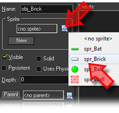
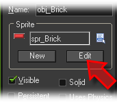
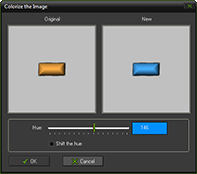
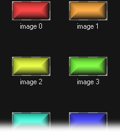
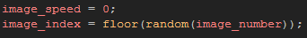

Tutorial
Page 4 of 13
Creating Bricks
The outside wall object has been made so it's time to move onto the bricks that are going to be destroyed by the player using their bat and ball. As you did for creating the wall object, right click on the
object folder of the resource tree and click on the Create Object option.
Now, give your object a new name (something like "obj_Brick") and then click on the assign sprite icon that appears beneath the name and select the brick sprite.

A new button will now have appeared beneath the sprite name that says Edit. This is will open the sprite properties for the sprite assigned to the instance, so press it now as we are going add a
few sub-images to our sprite.

Now that we have the properties up, click on the Edit Sprite button to open up the sprite editor and you will see a new window that shows the brick sprite with a number beneath it. This number
is its image index. You see, each sprite can have various sub-images which make up a sprite collection. These sub-images can be shown one after the other to create an animated sprite,
or they can be shown at different times to create different "states" (think of a button that can pressed and has an "up" and "down" state. Both states would be shown as two different sub-images of the same
sprite).
Select the sub-image "0" by clicking on it and then click the copy button and then the paste button to create a duplicate of this sub-image. Now double-click the sub-image "1" to open up the
image editor where we can now change the graphic. We are not going to do anything fancy to the sprite, only change it's color so that the bricks in our game are not all exactly the same! To do this, go to
the Image drop down menu and select Colorize, which will open another window where you can now change the colour of your sub-image.

Once you are happy with the result, click the "OK" button and then save the newly coloured sub-image by clicking the green tick in the upper left corner of the image editor (this will save and close). Now
repeat the operation until you have at least four different coloured sub-images.

When you have a brick sprite with various different coloured sub-images, close the sprite editor and go back to the Brick Object. We are now going to tell GameMaker not to animate
the sprite and to choose a random sub-image to display, so add a Create Event and drag a code action (Control Tab > Code) into it. This will open up the code editor where you should enter the following:

The first part of the code sets the image_speed to 0. This is the speed at which GameMaker will show the individual sub-images of the sprite, with 1 being the default value of 1 frame per
step. By setting this to 0 you are telling GameMaker not to animate the sprite and only show one sub-image all the time. The second line is the one that selects the sub-image to be shown, and it
is selecting, at random, just one of the coloured sub-images that you created earlier in this section.
Save your game now before continuing.
Click on the Next button to go to the next page of the tutorial.